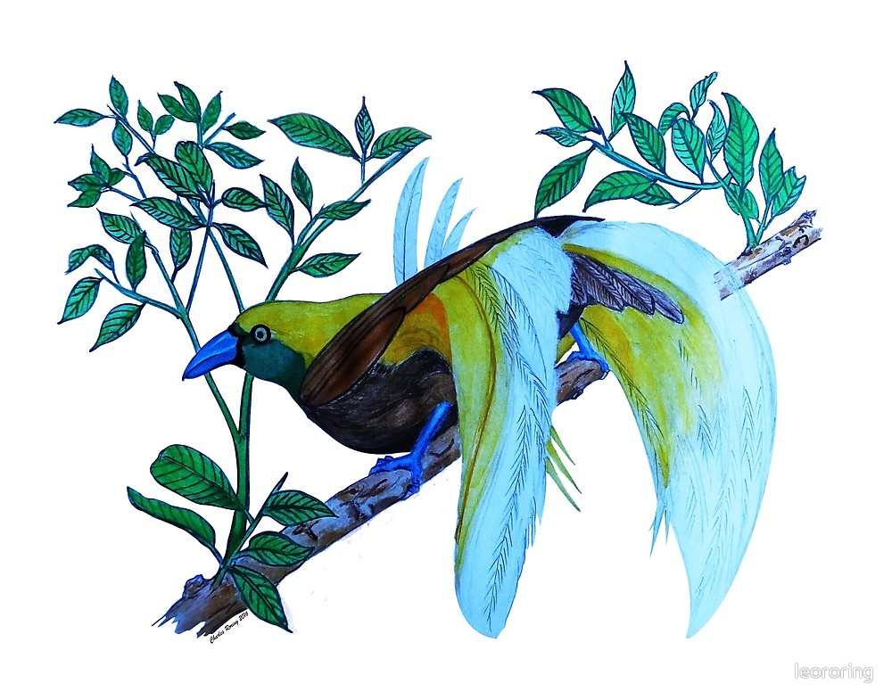
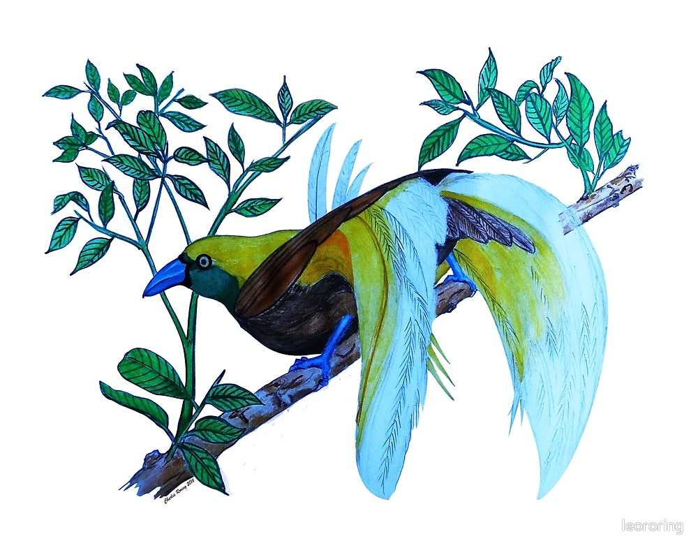

I have created some drawings of the paradise birds using watercolored pencils. I also create vector illustrations using inkscape. For the manual drawing, I started my making a sketch on paper using a Staedtler B graphite pencil. After making corrections and improving the lines and strokes, I added colors using Derwent Watercoloured Pencils. The colors became stronger when I used wet brush to make shadings in the artworks.
The artworks of these paradise birds are now available in prints on various Redbubble products such as iPhone or Samsung Galaxy cases, laptop sleeve, t-shirts, dress, drawstring bag, studio pouch, clock and a lot more. If you are interested in buying them, please, click on the pictures and have a look at them. When you buy some of the products in the Redbubble website that have my drawings printed on them, you have supported my efforts in promoting the preservation of rainforest and paradise birds.
I often organize tours to rainforest for visitors who want to watch paradise birds. In Susnguakti forest of Manokwari, there are several species which visitors can see, i.e. Lesser Birds of Paradise (Paradisaea minor), Magnificent Riflebird (Ptiloris magnificus), King Bird of Paradise (Cicinnurus regius), and Common Paradise Kingfisher (Tanysiptera galatea). To watch these bird, we usually have to wake up early in the mornings at 05.00. After making some preparations, and drinking some tea or coffee, we will start walking to the birding site of the paradise birds. Every species of paradise bird has got its own lek or trees. The most favorite one is Lesser Bird of Paradise. Birdwatchers like them because the male birds have got very beautiful feather. Since birds of paradise are active almost at the same time in the mornings and in the afternoons, birdwatchers need at least 3 days to watch them.
Most birdwatchers use binoculars to watch the birds. Famous brands such as Swarovski, Leica, and Nikon with the powers of 8×42 mm, 10×42 mm, 12×50 mm are the birding devices which visitors like to use. Sometimes a spotting scope is used. I personally have got a Visionking 20-60×60 birding scope mounted on a tripod to see birds that sit still in high trees. Spotting scope greatly enhances the birding experience of tourists whom I guide in the forest.
Birds of Paradise and other birds in general play very important role in supporting the ecosyste, of tropical rainforest. They disperse seeds of fruits which they eat to all corners of the forest. They also function as pest controller. Birds eat insect whose main food is young leaves of trees. Big birds eat lizards, snakes and mouse. Later the droppings from the birds will become fertilizer for the plants that grow in the forest. - This article was written by Charles Roring
 Courtship Dance of Lesser Birds of Paradise watercolor on paper
Male Lesser Bird of Paradise - watercolor on paper
Courtship Dance of Lesser Birds of Paradise watercolor on paper
Male Lesser Bird of Paradise - watercolor on paper
 Male Lesser Bird of Paradise - vector illustration
Male Lesser Bird of Paradise - vector illustration